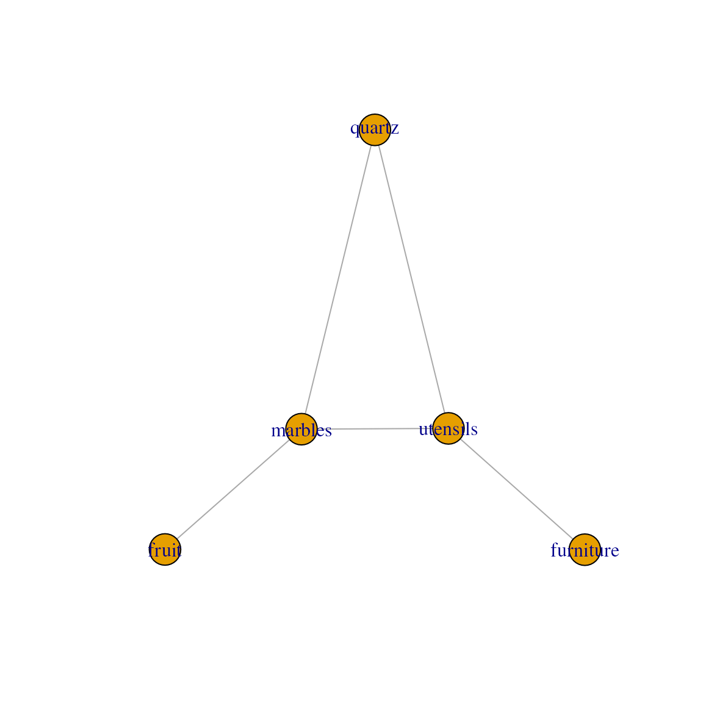

MultiFactor
MultiFactor.RmdOverview
MultiFactor aims to provide a consistent toolkit to incorporate relational data into data analytical tools and methods. In practice, we expect MultiFactor to be used in combination with additional packages that extend it. For instance, see ariadne and anansi, two such packages that make use of MultiFactor to link and convert across biological database IDs and perform muti-omics integration analysis, respectively.
Get started using MultiFactor
Installation instructions
Get the latest stable R release from CRAN. Then install the released
version of MultiFactor:
install.packages("MultiFactor")Or install the development version from this repository:
install.packages("remotes")
remotes::install_github("minotau-R/MultiFactor")Setup
library(MultiFactor)
#>
#> Attaching package: 'MultiFactor'
#> The following object is masked from 'package:base':
#>
#> nlevels
# Load demo data
set.seed(010292)
tp <- trade_posts()MultiFactor and LinkMap objects
LinkMap
The basic object in the MultiFactor package is the
LinkMap, which contains relational information across two
types of features. This format is sometimes referred to as an edge list. Under a
thin layer of S7, the LinkMap object is a
data.frame where the first two columns indicate which
feature IDs that are considered linked. Optional additional columns are
considered metadata.
Let’s use an example data set to take a closer look at
LinkMap. The trade_posts() function generates
data about fictional trade posts, where one type of good is traded for
another. In this particular case, types of furniture are traded for
types of utensils.
linkmap <- tp[[1]]
linkmap
#> furniture utensils
#> 3 desk spatula
#> 6 chest spatula
#> 9 desk whisk
#> 13 chair sieve
#> 15 desk sieve
#> 19 chair blender
#> 20 table blender
#> 33 desk cup
#> 35 drawer cupThe two types of goods are captured by the two columns, with column
names representing the types of good and rows representing
which specific type-pairs are traded at that trade post, or,
more generally, are linked in that LinkMap.
levels( linkmap )
#> $furniture
#> [1] "chair" "table" "desk" "bed" "drawer" "chest"
#>
#> $utensils
#> [1] "spatula" "whisk" "sieve" "blender" "knife" "cup"Notice that LinkMap is two factor columns
in a trench coat. We can inspect the levels as usual.
We can see that we have several of these types of trade posts in our data set. However, we also notice that the column names - the types of goods - can differ.
tp[[2]]
#> quartz utensils
#> 9 carnelian whisk
#> 12 agate whisk
#> 15 carnelian sieve
#> 24 agate blender
#> 29 onyx knife
#> 32 citrine cup
#> 33 carnelian cup
#> 34 rock crystal cup
#> 36 agate cup
tp[[3]]
#> fruit marbles
#> 3 cherry red marble
#> 5 melon red marble
#> 8 pear green marble
#> 14 pear purple marble
#> 17 melon purple marble
#> 25 apple yellow marble
#> 26 pear yellow marble
#> 33 cherry spotted marble
#> 36 blueberry spotted marbleMultiFactor
The MultiFactor is in essence a collection of
LinkMaps. Where LinkMaps contain relational
information across two data types, MultiFactors are a
representation of the relational graph formed by combining those
LinkMaps. The full object tp, which contains
the LinkMaps we just investigated, is in fact a
MultiFactor object:
tp
#> A MultiFactor::MultiFactor list S7_object,
#> 5 feature types across 5 LinkMaps.
#>
#> furniture utensils quartz fruit marbles
#> furniture2utensils 5 5 . . .
#> quartz2utensils . 5 5 . .
#> fruit2marbles . . . 5 5
#> quartz2marbles . . 5 . 6
#> utensils2marbles . 6 . . 4
#>
#> Values represent unique feature names in that LinkMap.
#>
#> Levels:
#> furniture : 6 Levels: chair ... chest
#> utensils : 6 Levels: spatula ... cup
#> quartz : 6 Levels: amethyst ... agate
#> fruit : 6 Levels: apple ... blueberry
#> marbles : 6 Levels: red marble ... spotted marbleNotice that a MultiFactor summarizes information across
the component LinkMaps in several ways. First, The matrix
shows the types of goods as columns and the component
LinkMaps that contain this information as rows. The numbers
in the matrix then show the number of unique types of that type of good
in that particular LinkMap - and that are therefore linked to the second
feature in the LinkMap.
For instance, in the top-left corner of the matrix, we can see that
the first LinkMap links furniture and utensils and is aptly
named furniture2utensils. Notice that five unique types of
furniture as well as five types of utensils are mentioned in
furniture2utensils.
Though MultiFactor is a list of LinkMaps
under the hood, we can also interact with its matrix representation, as
well as access the component levels:
dim(tp)
#> [1] 5 5
dimnames(tp)
#> [[1]]
#> [1] "furniture2utensils" "quartz2utensils" "fruit2marbles"
#> [4] "quartz2marbles" "utensils2marbles"
#>
#> [[2]]
#> [1] "furniture" "utensils" "quartz" "fruit" "marbles"
levels(tp)
#> $furniture
#> [1] "chair" "table" "desk" "bed" "drawer" "chest"
#>
#> $utensils
#> [1] "spatula" "whisk" "sieve" "blender" "knife" "cup"
#>
#> $quartz
#> [1] "amethyst" "citrine" "carnelian" "rock crystal" "onyx"
#> [6] "agate"
#>
#> $fruit
#> [1] "apple" "pear" "cherry" "orange" "melon" "blueberry"
#>
#> $marbles
#> [1] "red marble" "green marble" "purple marble" "blue marble"
#> [5] "yellow marble" "spotted marble"
lengths(levels(tp))
#> furniture utensils quartz fruit marbles
#> 6 6 6 6 6Note that levels of the same type are automatically unified across all component LinkMaps with that type of level.
weave() a path
Going back to our trading post example, let’s say we’d want to get
some new chairs, but we only have fruit. While both fruit and furniture
are available in our data set, there aren’t any trade post that deals in
that particular pair of goods. However, we could imagine trading our
fruit for furniture in steps: We can trade our fruit for a different
good, which we trade for another one, until we reach a good that we can
trade for furniture. The weave() function does exactly
this:
weave(tp, fruit ~ furniture)
#> fruit furniture
#> 1 cherry chair
#> 2 melon chair
#> 3 blueberry chair
#> 4 cherry table
#> 5 melon table
#> 6 pear desk
#> 7 cherry desk
#> 8 melon desk
#> 9 blueberry deskWe receive a new LinkMap containing all fruits that
could be traded for furniture.
We can use select_shortest_paths() to find the types of
traded goods in order, or more generally, the paths that were traversed.
If several paths exist, all will be traversed and included into one
LinkMap.
select_shortest_paths(tp, fruit ~ furniture)
#> [[1]]
#> [1] "fruit" "marbles" "utensils" "furniture"Compatibility with igraph and Matrix
MultiFactor relies heavily on the excellent igraph and Matrix
packages, particularly for path finding and sparse matrix
representation.
Convert MultiFactor main graph representation to
igraph object
library(igraph)
#>
#> Attaching package: 'igraph'
#> The following objects are masked from 'package:stats':
#>
#> decompose, spectrum
#> The following object is masked from 'package:base':
#>
#> union
# Convert to an igraph object
g <- as.igraph(tp)
g
#> IGRAPH a3786a8 UN-- 5 5 --
#> + attr: name (v/c), name (e/c)
#> + edges from a3786a8 (vertex names):
#> [1] furniture--utensils quartz --utensils fruit --marbles
#> [4] quartz --marbles utensils --marbles
plot(g)
Convert LinkMap link information to sparse adjacency
Matrix
# Convert to an igraph object
m <- as.matrix(linkmap, dimnames = levels(linkmap))
m
#> 6 x 6 sparse Matrix of class "ngCMatrix"
#> utensils
#> furniture spatula whisk sieve blender knife cup
#> chair . . | | . .
#> table . . . | . .
#> desk | | | . . |
#> bed . . . . . .
#> drawer . . . . . |
#> chest | . . . . .